1.1 Convolutions from Scratch
I implemented discrete 2D convolution twice using only NumPy: a literal four-loop version and a two-loop version whose inner kernel product is vectorized. Both explicitly zero-pad to preserve the input size and flip the kernel in both axes, so they implement convolution rather than cross-correlation.
def convolve_four_loops(image, kernel):
padded = np.pad(image, padding)
flipped = kernel[::-1, ::-1]
for y in range(H):
for x in range(W):
for j in range(kh):
for i in range(kw):
out[y,x] += (
padded[y+j,x+i] * flipped[j,i])
return outdef convolve_two_loops(image, kernel):
padded = np.pad(image, padding)
flipped = kernel[::-1, ::-1]
for y in range(H):
for x in range(W):
patch = padded[y:y+kh, x:x+kw]
out[y,x] = np.sum(patch * flipped)
return outCorrectness and timing
| Method, 96×96 and 9×9 | Time | max |error| |
|---|---|---|
| Four loops | 0.646 s | 8.88×10⁻¹⁶ |
| Two loops | 0.098 s | 4.44×10⁻¹⁶ |
| SciPy convolve2d | 0.0024 s | reference |
Interpretation
Vectorizing the 81 multiply-adds gives a 6.6× improvement over four Python kernel loops. SciPy remains much faster because its loop nest is compiled. The floating-point discrepancies are at machine precision, including the RGB comparison (6.66×10⁻¹⁶).
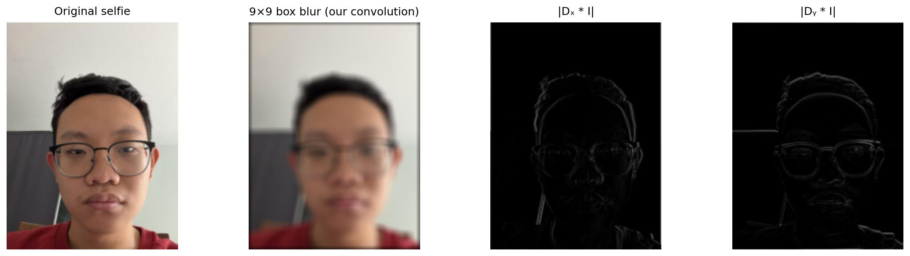
1.2 Finite Difference Operator
I convolved cameraman with centered finite differences Dx=[1,0,−1]/2 and Dy=DxT, then formed the gradient magnitude √(Ix²+Iy²). A threshold of 0.105 retains the camera, tripod, coat, and silhouette while suppressing weak grass and film noise; 5.83% of pixels remain.
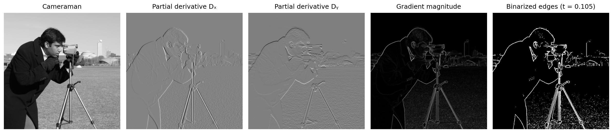
1.3 Derivative of Gaussian
A 13×13 Gaussian with σ=2 suppresses high-frequency noise before differentiation. The resulting edges are thicker and more continuous than raw finite differences. By associativity, differentiating the Gaussian once creates two derivative-of-Gaussian filters that can be convolved with the image directly.
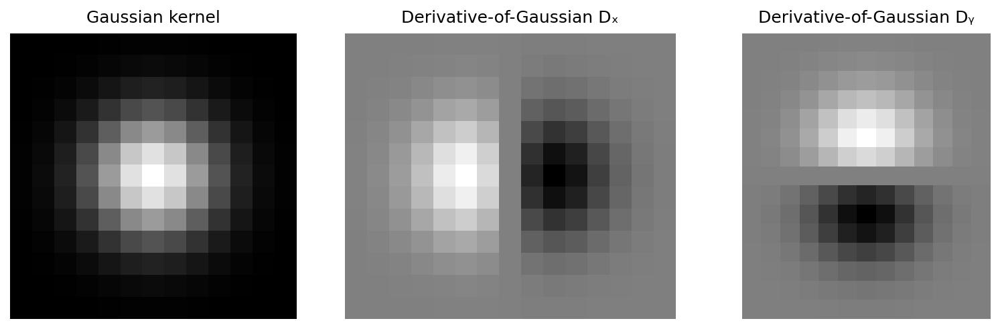
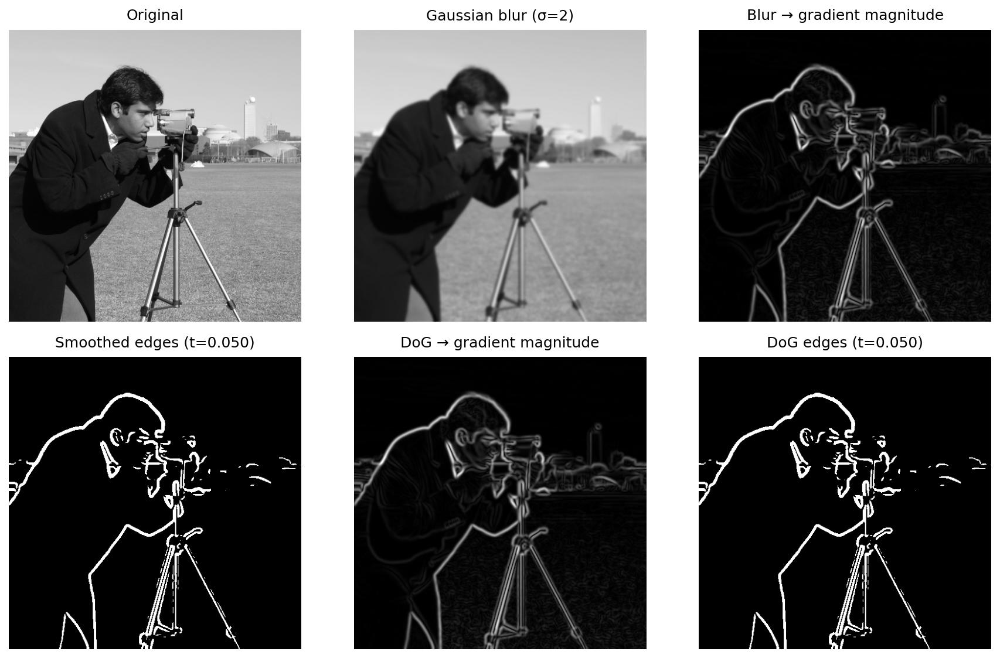
Gradient Orientation without Angle APIs
I approximated atan algebraically on |z|≤1 using z(π/4+0.273(1−|z|)), used the reciprocal identity outside that interval, and handled quadrants explicitly from the signs of Ix and Iy. This avoids atan and atan2. Orientation maps to HSV hue, while clipped gradient magnitude controls value, so flat regions remain dark and strong edges reveal direction.
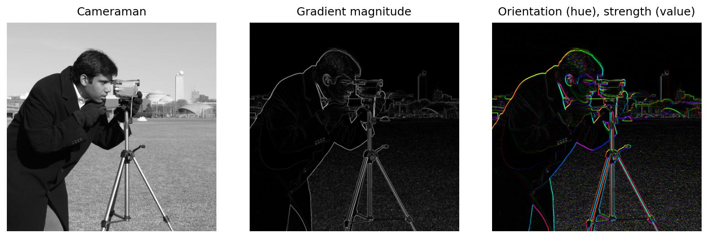
2.1 Image Sharpening
The unsharp mask treats I−Gσ*I as high-frequency detail and adds α times that signal back. I used σ=2 and α=1.5 for the main Taj result. Larger α makes stone edges crisper but eventually introduces bright/dark halos.
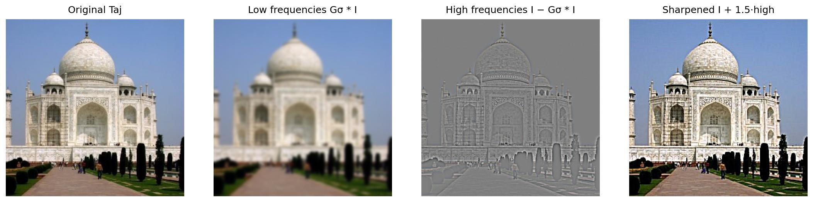
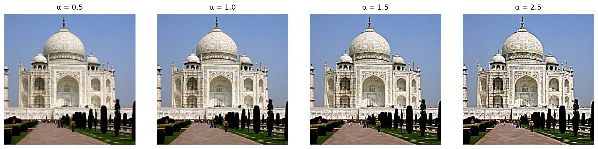
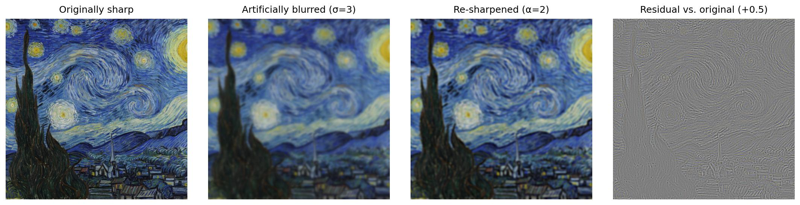
2.2 Hybrid Images
Each pair is geometrically aligned before filtering. For both face pairs, I manually verified the two eye centers and mapped them to the same target coordinates with a similarity transform, which corrects translation, scale, and in-plane rotation without distorting facial proportions. One image contributes a Gaussian low-pass and the other contributes I−Gσ*I; close viewing resolves high-frequency edges, while distance reveals the low-frequency subject.
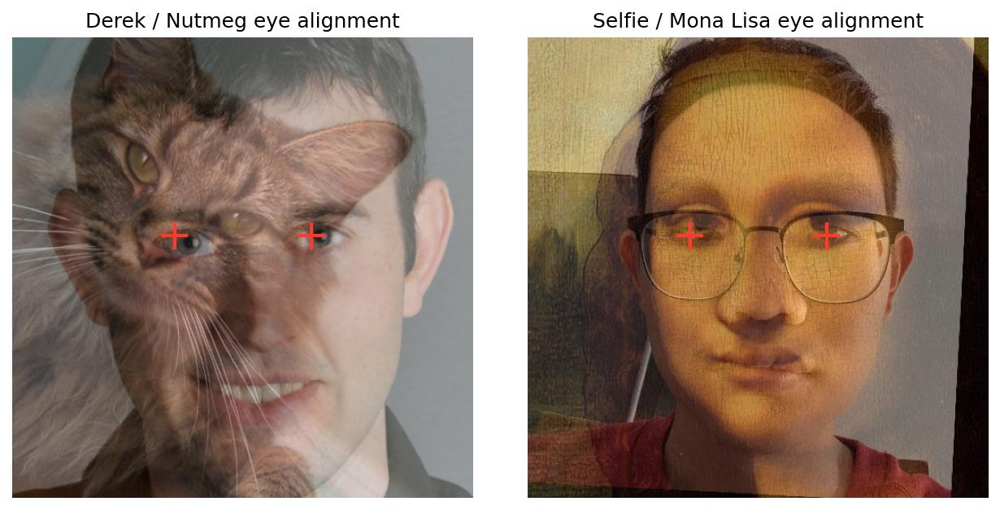
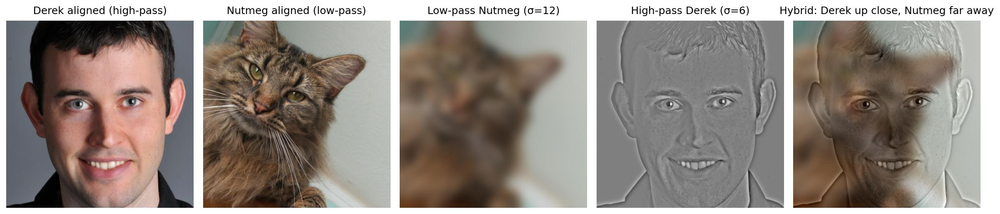
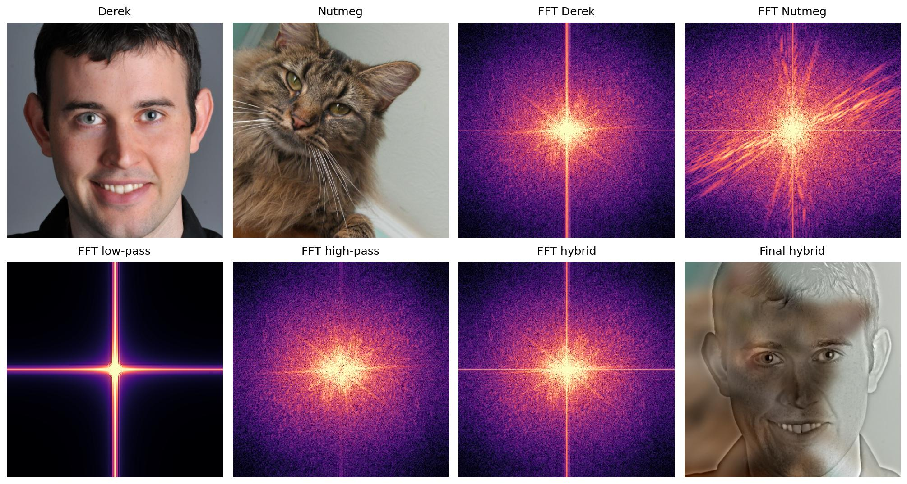
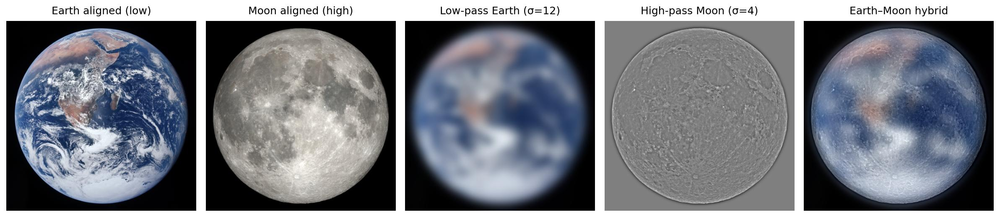
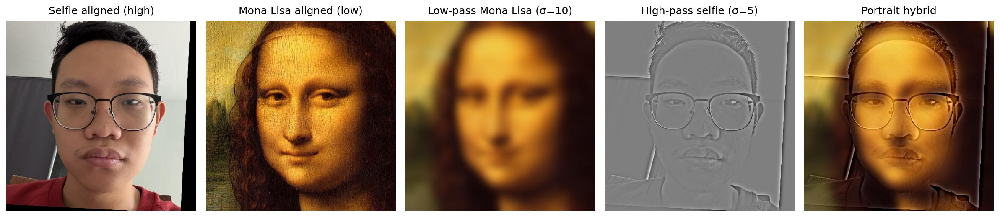
Bells & Whistles: color contribution
Color is most stable in the low-frequency component: broad chromatic fields survive downsampling and support the far-view identity. High-pass-only color is fragile and adds colored edge halos. I therefore use low-pass color with grayscale high frequencies for the displayed hybrids.
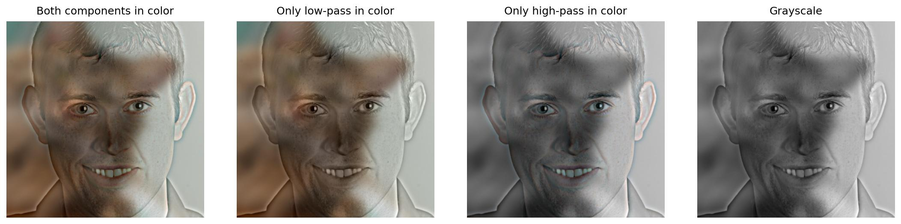
2.3 Gaussian & Laplacian Stacks
I constructed six-level stacks without downsampling or any pyramid routine. G0=I and later levels blur the original with σ=2,4,8,16,32. Each Laplacian band is Li=Gi−Gi+1, with the coarsest Gaussian retained as the residual. Summing all bands reconstructs both inputs with maximum error 1.11×10⁻¹⁶.
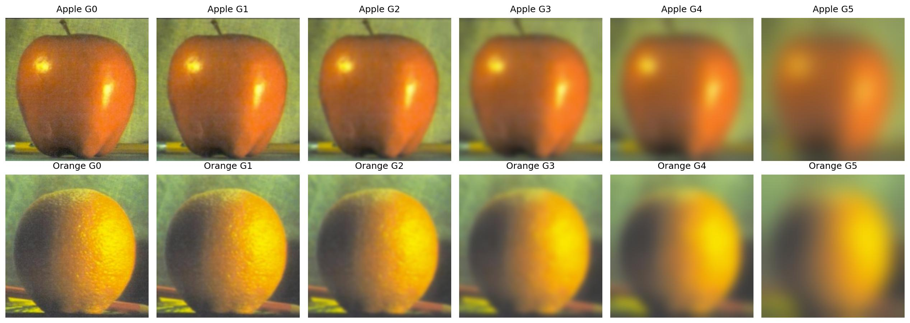
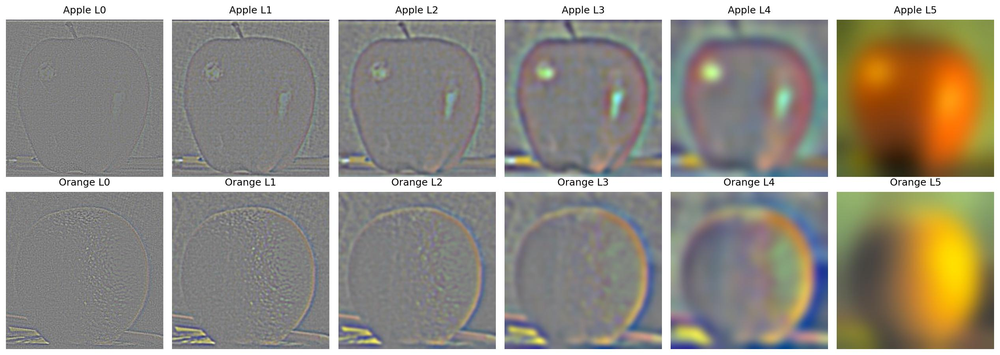
2.4 Multiresolution Blending
For every level, I blur the binary or irregular mask to the matching scale and combine Laplacian bands as G(M)iL(A)i + (1−G(M)i)L(B)i. Summing the blended bands produces a seam whose width is appropriate to each spatial frequency.
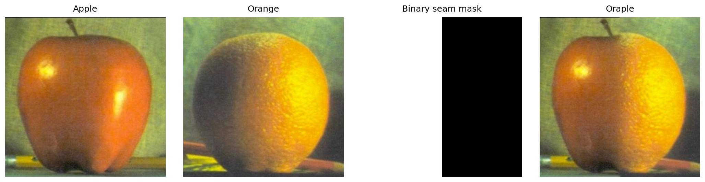
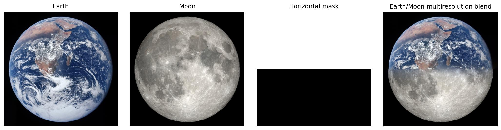
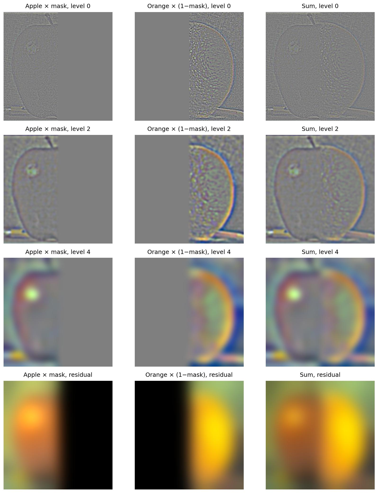
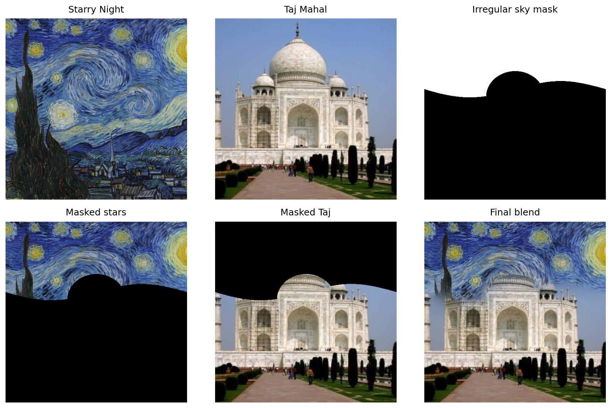
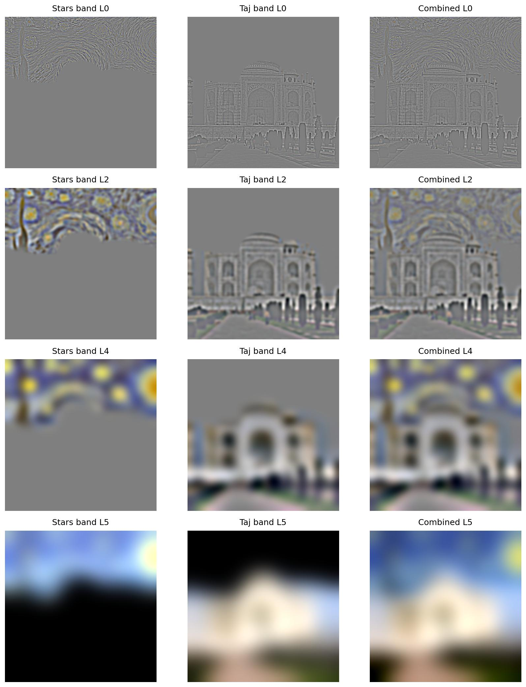
Most Important Thing I Learned
The most important insight is that “an image” is not a single object at all scales. The same Gaussian family can separate detail for sharpening, choose which identity survives viewing distance in a hybrid, and determine how wide a seam should be in each Laplacian band. Thinking in frequency bands turns several seemingly different editing tricks into one coherent operation: preserve, suppress, or spatially route selected scales.
Reproducibility and sources
The submitted code/main.py regenerates every figure and records parameters and numerical checks in results/metrics.json. Alignment points, face crops, disc crops, thresholds, and masks are deterministic; no interactive clicks or network access are required.
Course materials: CS 180 Project 2 specification and the official spline sample. External imagery: NASA’s Apollo 17 Blue Marble and Moon phase imagery; public-domain Mona Lisa and The Starry Night. Derek/Nutmeg, selfie, Taj Mahal, and cameraman are project/provided test inputs.
{kind=link}
{kind=link}
{kind=link}